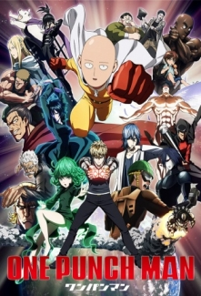
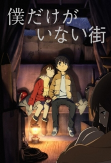
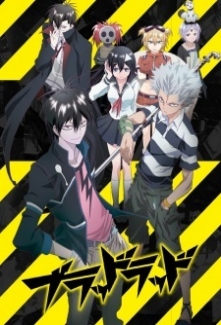
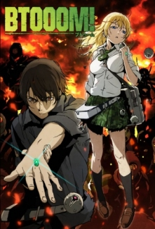
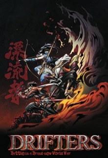
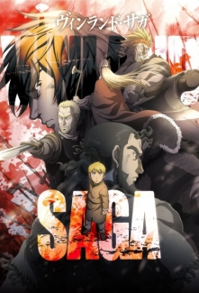

One Punch Man
Bu seri cansız duruşu, kel kafası ve de hiç de etkileyici olmayıp her tarafından sıradanlık fışkıran Saitama adındaki genç hakkında. Ne var ki sıradan görünüşünün altında sıradan problemler yatmamakta. İşin aslında kendine zorlu rakipler arayan süper bir kahraman o! Asıl sorun işte burada ortaya çıkıyor. Ne zaman umut vadedebilecek bir rakip ortaya çıksa tek yumrukla amele sümüğü gibi yere yapıştırıyor. Acaba Saitama sonunda kendisine meydan okuyabilecek kötü birisini bulabilecek midir? Meydan okumak için yeni kötüler ararkenki Saitama'nın kolay ve komik zaferlerini sakın ola kaçırmayın!
Boku dake ga Inai Machi
Hayatın zorluklarıyla cebelleşen manga yazarı Satoru Fujinuma, kendisini ifade edememe korkusuyla yüzleşmektedir. Ancak, ölüm ve faciaları engellemeye zorlayan doğaüstü bir yeteneği vardır. Bu olaylar gerçekleşmeden önce, zamanda geri gider ve bu süreç sürekli tekrar eder; ta ki söz konusu olan kaza önlenene kadar. Bir gün, kendisini katil durumuna düşüren bir kazaya karışır. Kurbanı kurtarma çabasıyla kendisini geçmişe yollar. Fakat, sınıf arkadaşı Kayo Hinazuki'nin kaybolmasından bir ay önceki zamana, ilkokul öğrencisi olduğu yıllara gelmiştir. Bunun üstüne, Satoru kendisine yeni bir görev edinir: Kayo'yu kurtarmak ve kayboluşundaki gizemi çözmek.
Blood Lad
Staz, cehennemin doğu bölgesinin vampir lideridir, ama insan kanını pek sevmemektedir. İnsan kanı yerine Japon kültürüyle ilgilenen çaresiz bir otakudur. Cehenneme kaza eseri Yanagi Fuyumi isimli genç bir japon kızı düştüğünü duyunca yerinde duramaz. Ne yazık ki Staz bölgesine giren davetsiz bir misafirle uğraşırken, zavallı Fuyumi bir yaratık tarafından öldürülüp hayalete dönüşmüştür. Çaresiz Staz Fuyumi’ye bir yolunu bulup onu tekrar yaşama döndüreceği üzerine yemin eder.
Btooom!
Dünyada oyuncu sayısı milyonları aşmış olan online BTOOOM oyunu, silahların kullanılmadığı, herkesin birbiriyle çeşitli bombalar kullanarak savaştığı bir oyundur. Ryouta Sakamato da gerçek hayatta sıradan, çok da başarısı olmayan biriyken, BTOOOM oyununda dünyaca tanınan Japonya'nın en başarılı oyuncularından biridir. Ryouta bir gün nasıl olduğunu anlayamadan kendini tropikal bir ormanda bulur. Buranın neresi olduğunu ve nasıl geldiğini araştırırken bir adamın saldırısına uğrar. Kısa zamanda da adamın bir BTOOOM oyuncusu olduğunu, kendisinin de bir şekilde BTOOOM oyunu içerisine girdiğini fark eder. Ryouta, oyun tecrübeleriyle kısa sürede kendisini saldıranı yendikten sonra, neler olup bittiğini araştıracak, bir yandan da BTOOOM dünyasında hayatta kalmaya çalışacaktır.
Drifters
Shimazu Toyohisa Sekighata Savaşına karışmış iken Ii Naomasa’ya ölümcül şekilde yaralamayı başarır, ancak kendide bu esnada kritik şekilde yaralanır. O kanlı ve harap olmuş alandan yürürken kendini bir yığın kapıyla dolu bir koridorda bulur. Orada masada oturan gözlüklü biri onu beklemektedir. O adamın ismi Murasaki’dir ve Toyohisa’yı en yakın kapıya gönderir. Toyohisa o kapıdan geçince gözlerini başka bir dünyada açar. Orada kendisi gibi oraya transfer edilmiş güçlü savaşçılar ile karşılaşır. Bu savaşçılardan oluşan grubun ismi “Drifters(Sürüklenenler)”dir.
Vinland Saga
Binlerce yıldır Vikingler, şiddet yanlısı en güçlü soylardan biri olarak kendilerine ad yapmışlardır. Vikinglerin en iyi savaşçılarından birinin oğlu olan Thorfinn, derinden beslediği intikam arzusunu yerine getirmek için yeteneklerini geliştireceği savaş alanlarında çocukluğunu geçirir.